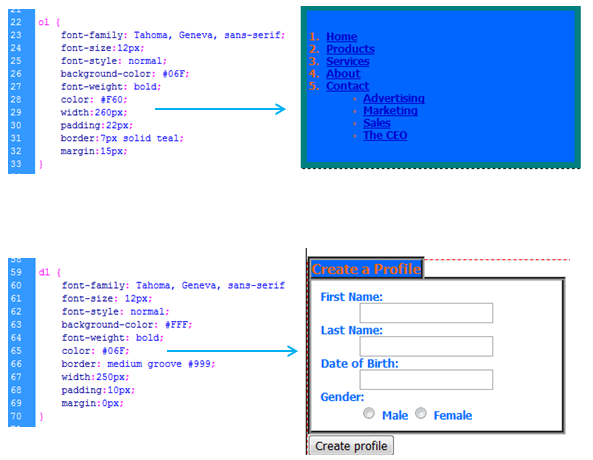

Box modeling is a technique in 3D modeling where a primitive shape (such as a box, cylinder, sphere, etc.) is used to make the basic shape of the final model. This basic shape is then used to sculpt out the final model. The process uses a number of repetitive steps to reach the final product, which can lead to a more efficient and more controlled modelling process.
